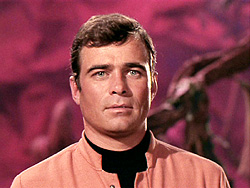

| H
muito tempo, depois que samos da reunio trekker no Rio, vamos para a casa de
Ana Beatriz fazer um lanche. Ento, eu tenho o hbito de ficar olhando para a
sua estante, procurando um livro qualquer de Jornada nas Estrelas que me
interesse de ler. Arranjei um pouco mais de espao para isso e peguei com ela
um livro emprestado: "Federation", de Judith & Garfield Reeves-Stevens.
Era momento razoavelmente propcio por causa da criao da malfadada srie Enterprise
que, de to problemtica, no sei se poderamos chamar de cannica, em relao
s obras literrias que gozam desta classificao no mundo trekker. De todo modo,
o livro bem escrito e visa conciliar as atividades da famosa dupla de capites
da USS Enterprise, agindo, cada qual no seu tempo, para desvendar uma determinada
trama que envolve: o guardio da Eternidade, o obelisco aliengena do planeta
de Kirok, os romulanos , os ferengis, os klingons e, nada mais nada menos do que
Zefram Cochrane e a comissria Nancy Redford.
Zefram est sendo perseguido
pelo criador de um tal "movimento optimum", liderado por Adrik Thorsen. O casal
de "Metamorphosis" (episódio
do 2º ano da Clássica) o fio condutor entre Kirk e Picard,
como personagens de uma srie de eventos aps a criao da tecnologia da dobra
espacial e a viagem para Alfa Centauro, feita na ocasio por Cochrane. Na confuso
est presente no sculo 21 a ecloso da 3ª Guerra Mundial/Guerras Eugnicas.
 Cochrane
(foto) realiza o seu feito maravilhoso, mas, algumas dcadas frente, desaparece
no espao at ser encontrado por Kirk no planetide J27 da regio de Gama Canaris,
conforme vimos na Srie Clssica (de novo, "Metamorphosis").
Os autores do livro tentaram explicar porque o heri esteve sumido: na verdade
Cochrane estava fugindo da perseguio obsessiva do vilo e lder do movimento
optimum, que tenta se aproveitar da tecnologia de dobra para construir uma bomba
de enorme potncia para ter poder sobre os inimigos e conquistar a civilizao
humana, alm de outras possivelmente existentes por a. Cochrane e seus amigos
se tornaram grandes opositores de Thorsen, e por isso teve que fugir para no
ser morto, como alguns. Thorsen vai perseguindo Cochrane e seus amigos at que
este se finge de morto por muito tempo.
A obsesso do vilo tanta que
ele vai atrs de Cochrane. Kirk o reencontra e tenta escond-lo numa singularidade
temporal. Anos mais tarde, Picard encontra Cochrane neste lugar, mas Thorsen se
esconde numa inteligncia artificial e persegue Cochrane e à sua mulher.
At o tenente-comandante Data possudo pelo "esprito" de Thorsen para tentar
matar nosso heri. O livro no se refere aos eventos descritos no filme para cinema
"Jornada nas Estrelas: Primeiro Contato", onde Picard conhece
Cochrane no incio de sua fabulosa tentativa de inovao tecnolgica, afinal,
foi escrito em 1995, um ano antes do lançamento de "Primeiro Contato"
nos cinemas. Porém, isso no compromete o desenvolvimento da histria contada
na obra. Ao contrrio
que possa parecer pelo ttulo, no uma histria sobre a origem da Federao,
mas a narrativa alternativa da vida de uma grande figura, que possibilitou a sua
construo no futuro, com seus artefatos tecnolgicos e seus nobres princpios.
Adicione-se a isso a participao de dois dos seus mais famosos capites, representando
a manuteno de uma certa tradio, ao mesmo tempo em que existe a evoluo tcnica
e a vivncia de novas experincias e aventuras entre o sculo 23 e 24.
A
preocupao dos autores nem tanto a de traar os detalhes que possibilitaram
a organizao dessa entidade. Isso est um pouco melhor explicado na srie Enterprise,
se bem que os roteiristas da Paramount ainda nos devem uma srie ou filme que
trate melhor do tema. Assim mesmo, quem se aventurar pelas 437 pginas do livro
no irá se decepcionar com o roteiro criativo, a ponto de envolver acontecimentos
importantes e aparentemente desconexos da saga de Jornada nas Estrelas.
Eles do uma "soluo final" ao casamento de Cochrane com a companheira aliengena
que vive no corpo de Redford. Se bem que isso lembra o desfecho de Ilia e Decker
no primeiro filme de Jornada para o cinema. Talvez,
a criatividade dos autores pudesse ser melhor trabalhada evitando desfechos j
conhecidos, embora haja coerncia com a saga em geral e o romance descrito na
trama que eles inventaram. interessante ver tambm que, para os autores, aquela
boa e velha insgnia da Enterprise, que se tornou geral para toda a Frota Estelar,
simboliza o movimento de dobra, em formato de uma gota, contendo uma nave estelar. Santa
Criatividade, Batman! Se voc estiver sem fazer nada neste vero, arranjem um
exemplar de "Federation"
e leia. Seu tempo no ser perdido. |